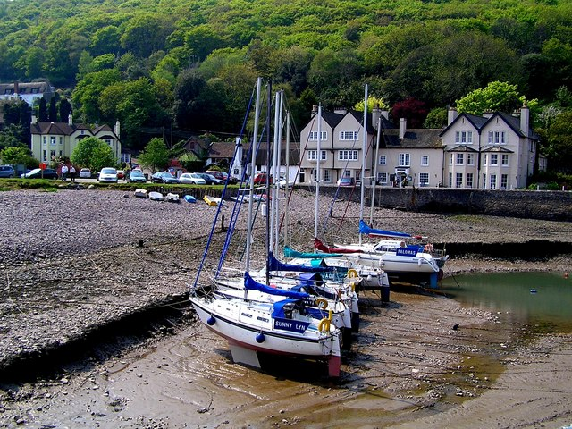
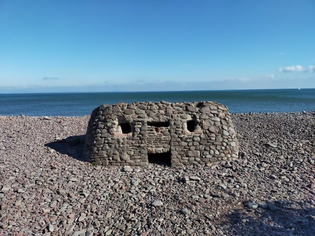
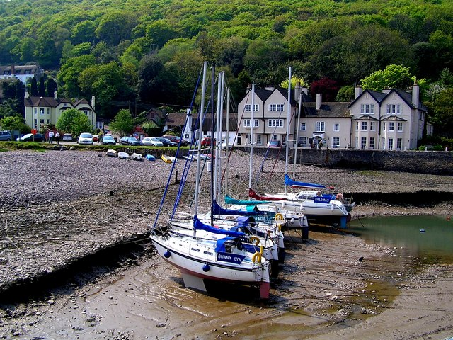
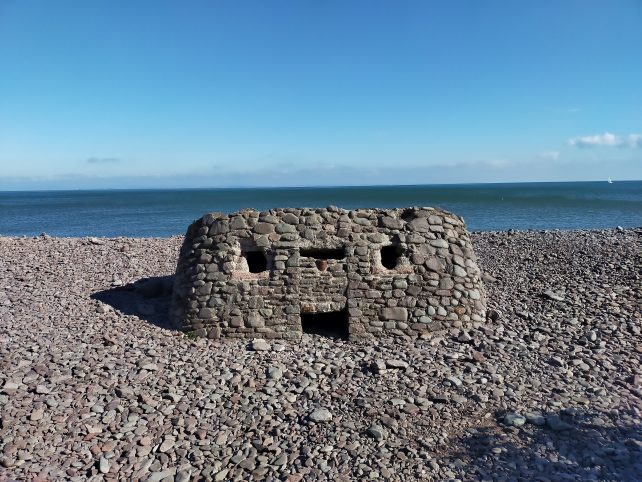

The long pebble and rock beach at Porlock Weir is popular for bathing in summer, and offers excellent angling opportunities. During the winter the beach here can also be one of the best surf spots in the area.
Outside of the village, the beach is backed by a marshland that contains an abundance of wildlife and makes the area popular for bird watchers. The South West Coastal Path passes the beach and offers excellent views out over the Bristol Channel and of the surrounding mountainous countryside and Exmoor Heritage Coast, which happens to be of particular geological and archaeological significance.